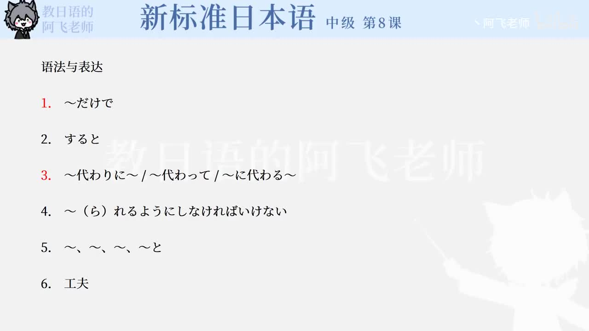

Bilibili P141 · Text Reading
カップラーメン
从杯面“倒水三分钟即可食用”的便利性出发，理解安藤百福如何从美国试食场景中发现容器问题，并通过材料、形状、销售方式的研发把方便面推向国际市场。
全篇听力精讲
按 6 段说明文轮播。每段依次播放日语原文、中文翻译、结构说明、断句提示、语法要点和词汇搭配。
这篇课文在讲什么
便利性开篇杯面的核心卖点是“倒入热水、等三分钟、随处可吃”。
观察带来发明安藤在美国看到纸杯和叉子的吃法，发现国际化必须改变容器。
研发形成产品材料、形状、宣传不断试作，最终让杯面扩展到世界。
说明文推进链
1 · 提出对象カップラーメンは便利
2 · 介绍人物安藤百福と国際化
3 · 发现契机紙コップとフォーク
4 · 产品完成容器・材料・世界展開
逐段精读
重点语法与表达
课文词汇与固定搭配
练习与复习
来源说明：视频标题、时长、CID 和首帧来自 Bilibili 公开视频接口；课文原文来自本地《新标准日本语》中级第8课教材数据，并修正少量明显录入误差用于学习。